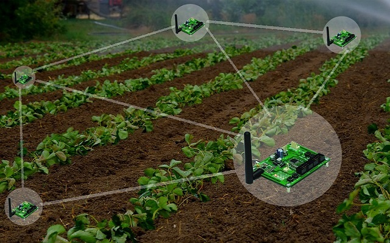

-
Mote Design for Weather Station
By virtue of its geographical location, Pakistan is highly vulnerable to climate change. Thus due to high unpredictability in extreme weather events, many natural disasters have occurred in the past which resulted in political and economic instability and deterioration of natural ecosystems. This project aims to develop a system which can collect information related to weather efficiently to enable predictions of potential climatic hazards.
-
RFID based access control system
RFID based access control system aims towards the development of an automatic vehicle entrance system. The project is divided into different phases including parking system, student access control and the automation of student attendance management system.
- 
WSN Deployment for WARM
This project focuses on using the technology of wireless sensor networks in irrigation systems to introduce the concept of Precision Farming in Pakistan.This project has been funded by DAAD - Germany under German-Pakistani Research Collaboration Program and will be jointly executed by KFRL (Koshish Foundation Research Lab) and DFKI (Deutsche Forschungszentrum Fur Kunstliche Intelligenz), German Research Center for Artificial Intelligence.

Smart Safety Vest Design
The project aims to make warehouses a more safe place to work by preventing accidents and injuries caused by automated machinery or carrier vehicles. Two gadgets have been developed for this to accomplish this feat.

Intelligent Hearing Assistant
Deafness, a loss in the ability to hear, can be caused by many reasons with old age being the most prominent one. The task of getting the attention of an old person suffering from partial or total deafness could be very difficult depending on the surroundings. The purpose of this project is to solve that problem and assist both the hearing impaired and their caretakers.

A Cost Effective Smart Home Scheme
This project is about developing a cost effective smart home solution that is compatible to existing infrastructure of homes in Pakistan. It covers the applications ranging from energy management, safety & security, assisted living to entertainment.

Smart Agriculture
The outcome of this project will be a fully automated and intelligent irrigation control system that can be controlled remotely by web interface and easy to use hand held gadget to preserves fresh water. This system will be powered by solar panels to reduce energy costs. This not only saves water, but also reduces costs for the field owner.
-
Patient Monitoring System
Pulse oximetery refers to a non-invasive method of monitoring a persons blood oxygenation level. Most common oximeters use different absorption characteristics of light at different wavelengths to measure blood oxygen level and heart rate. We have implemented a low-cost, low-power, high-speed and reliable oximeter design.
-
A Cost Effective Smart Parking Scheme
Parking can be a challenging issue, especially in urban areas where 30 percent of all traffic congestion is caused by drivers circling to find a space. Income for shops and local businesses is also heavily affected by the availability of parking. This project provides a cost effective solution to latter problem.

A workshop on Embedded Systems
The main aim of this workshop is to create a better learning and research based environment in NED University of Engineering & Technology, Pakistan. It is a platform where students can learn and then make their IoT project Ideas come true.
-
KFRL Weather Station
A page for all the information of the deployed nodes of weather station. It includes latest version of google map with nodes marked and you can get the information of any node by clicking on it at the map. Information includes Temperature, Humidity and Light intensity of the node.
-
A workshop on Internet of Things
During winter vacations, the Team Koshish Foundation Research Lab (KFRL) organized a workshop titled as IoT Weather Station. The aim of this workshop was to make students aware of the latest technology. During the workshop, the student was instructed to design IoT enabled kit with built-in temperature, humidity and light sensor. Student was also guided to develop the software for kit and made it online through cloud.